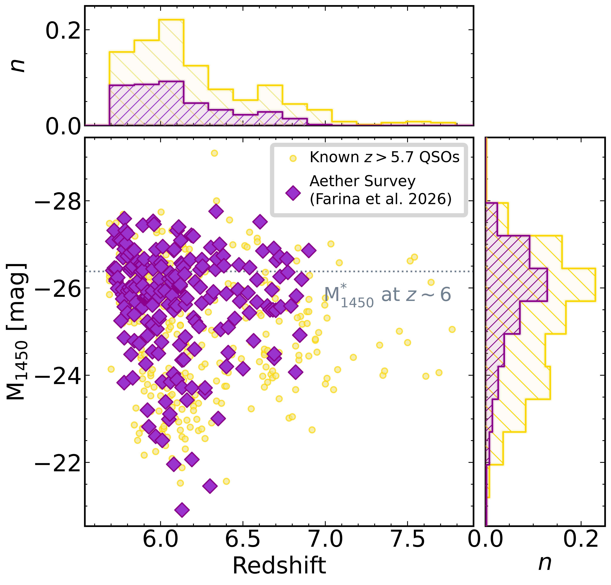

Target Selection
The Aether sample consists of quasars at 5.7 < z < 6.9 known at the time of proposal preparation. Targets were drawn without additional selection beyond redshift and observability, yielding an essentially complete census of the known reionization-era quasar population accessible to JWST/NIRSpec.
343 quasars satisfy the redshift selection.
A small number were subsequently excluded due to the lack of suitable
guide stars for NIRSpec IFU pointings, yielding the final observed sample.

Figure: redshift and luminosity distribution of the Aether sample.
Sample Summary
| Property | Value |
|---|---|
| Redshift range | 5.7 < z < 6.9 |
| Parent sample | 343 quasars |
| Excluded (guide star availability) | [placeholder N] |
| Final observed sample | [placeholder N] |
| M1450 range | [placeholder] |
| Instrument / mode | JWST NIRSpec IFU |
Example Target List
| Name | z | M1450 | Notes |
|---|---|---|---|
| [placeholder ID] | [z] | [mag] | [notes] |
| [placeholder ID] | [z] | [mag] | [notes] |
| [placeholder ID] | [z] | [mag] | [notes] |